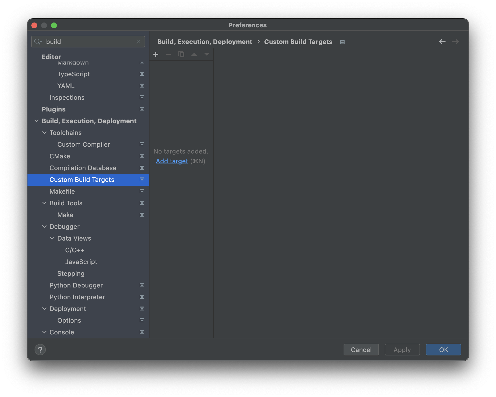
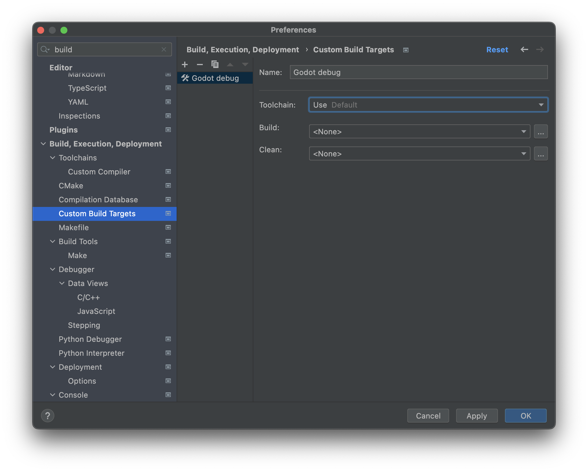
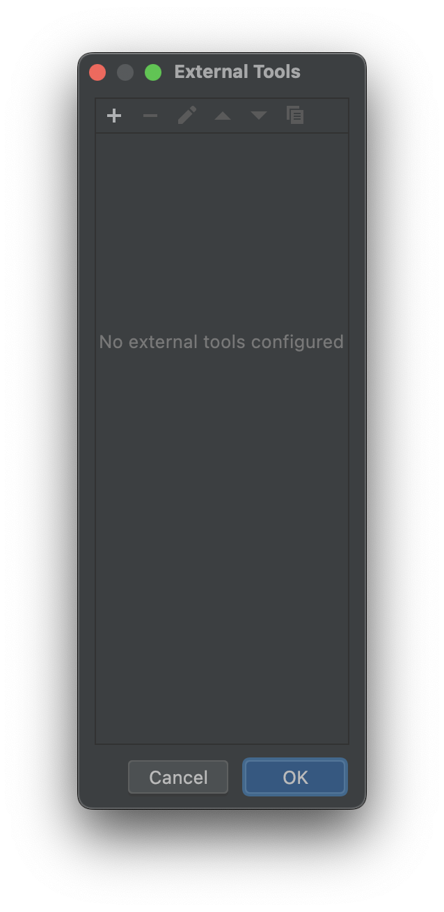
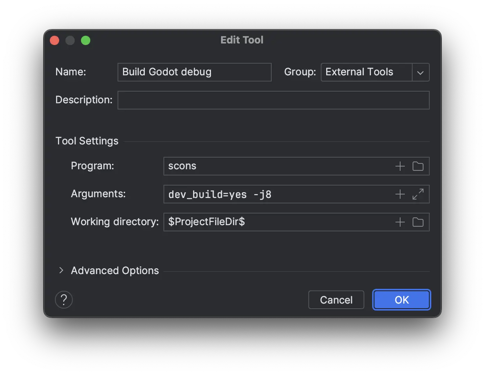
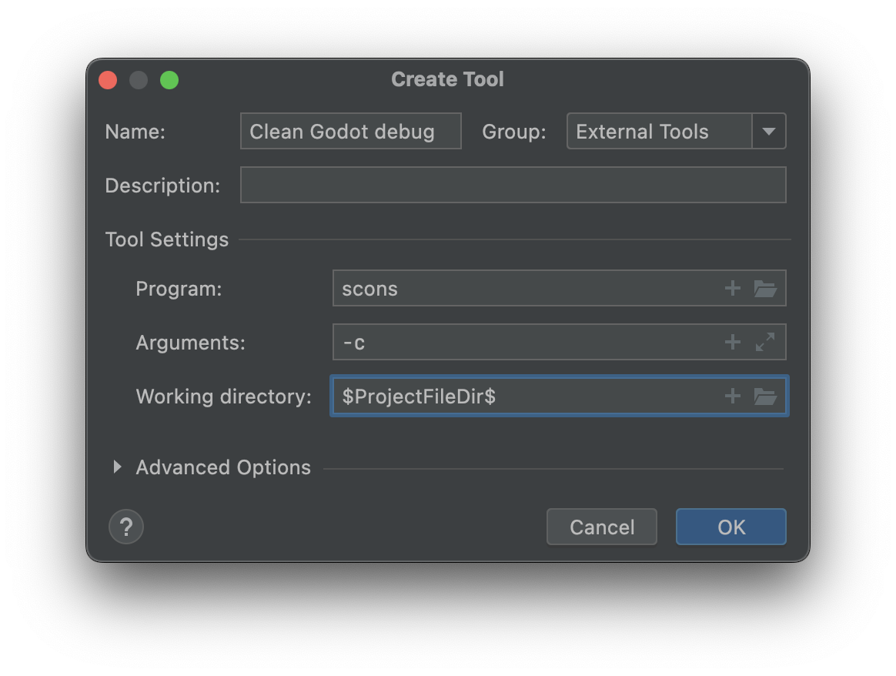
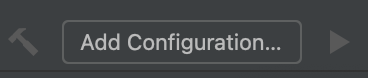
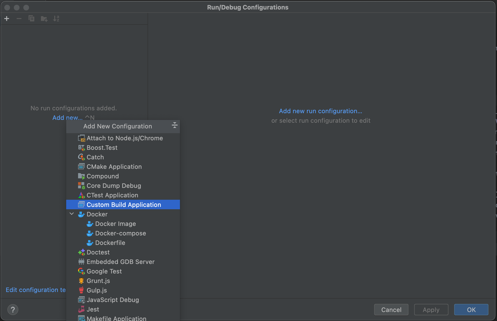
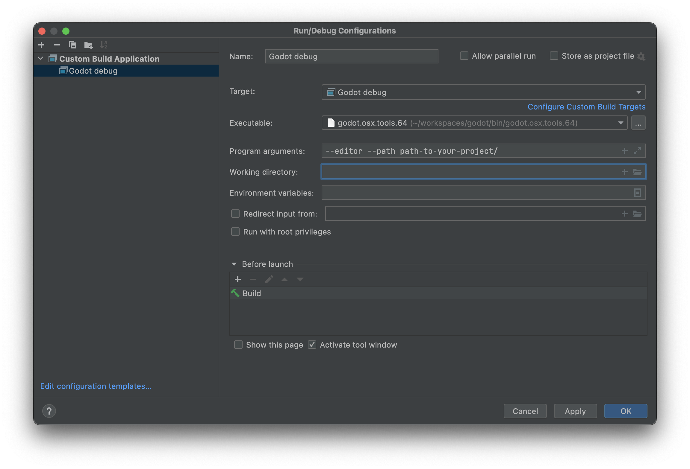
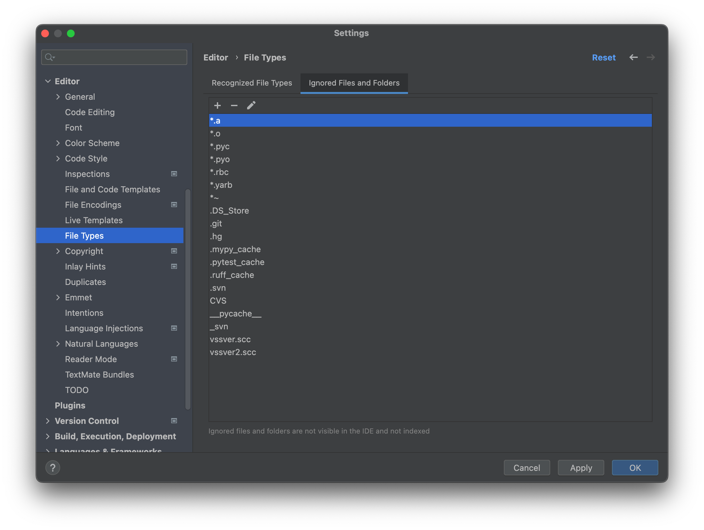

CLion
CLion là một IDE C++ của JetBrains, miễn phí cho cá nhân phát triển phi thương mại.
Import dự án
CLion có thể import tệp compilation database của dự án, thường có tên compile_commands.json. Để tạo tệp compilation database, hãy mở terminal, chuyển đến thư mục gốc của Godot và chạy:
scons compiledb=yes compile_commands.json
Sau đó, mở thư mục gốc của Godot bằng CLion và chờ dự án được lập chỉ mục hoàn tất. Nếu tính năng hoàn thành code, thông tin tham số hoặc refactor chưa được bật, bạn sẽ cần tải dự án bằng CMake. Để làm vậy, hãy tìm tệp CMakeLists.txt trong thư mục platform\android\java\nativeSrcsConfigs, nhấp chuột phải và chọn . Khi dự án tải lại, một cấu hình build godot sẽ được thêm vào. Bạn có thể xóa cấu hình này một cách an toàn vì tệp CMake sẽ không build dự án mà chỉ tồn tại để tải dự án trong các IDE của JetBrains.
Ghi chú
Người dùng Windows:
Để
compile_commands.jsonđược tải đúng trong CLion, trước tiên bạn phải cấu hình toolchain Visual Studio cho CLion.
Điều hướng đến Settings > Build, Execution, Deployment > Toolchains
Nhấp nút + và chọn
Visual StudioCLion sẽ cố gắng phát hiện bản cài đặt Visual Studio của bạn. Nếu không thành công, hãy dùng biểu tượng tệp ở bên phải
Toolset:để chọn thư mục cài đặt Visual Studio.Bạn có thể thoát rồi mở lại CLion và nó sẽ tải lại
compile_commands.json

Biên dịch và gỡ lỗi dự án
CLion không hỗ trợ sẵn việc biên dịch và debug Godot qua SCons. Bạn có thể làm được điều này bằng cách tạo một build target và run configuration tùy chỉnh trong CLion. Trước khi tạo build target tùy chỉnh, bạn phải biên dịch Godot một lần trên dòng lệnh để tạo tệp thực thi Godot. Mở terminal, chuyển vào thư mục gốc của Godot và chạy:
scons dev_build=yes
Để thêm một build target tùy chỉnh gọi SCons để biên dịch:
Mở CLion và điều hướng đến Settings > Build, Execution, Deployment > Custom Build Targets

Nhấp Add target và đặt tên cho target, ví dụ
Godot debug.

Nhấp ... bên cạnh hộp chọn Build:, rồi nhấp nút + trong hộp thoại External Tools để thêm một công cụ bên ngoài mới.

Đặt tên cho công cụ, ví dụ
Build Godot debug, đặt Program thànhscons, đặt Arguments thành các cài đặt biên dịch bạn muốn (xem biên dịch Godot), và đặt Working directory thành$ProjectFileDir$, tương ứng với thư mục gốc của Godot. Nhấp OK để tạo công cụ.Ghi chú
CLion không mở rộng các lệnh shell như
scons -j$(nproc). Hãy dùng giá trị cụ thể thay thế, ví dụscons -j8.

Quay lại hộp thoại External Tools, nhấp + lần nữa để thêm công cụ bên ngoài thứ hai dùng để dọn bản build Godot qua SCons. Đặt tên cho công cụ, ví dụ
Clean Godot debug, đặt Program thànhscons, đặt Arguments thành-c(sẽ dọn bản build), và đặt Working directory thành$ProjectFileDir$. Nhấp OK để tạo công cụ.

Đóng hộp thoại External Tools. Trong hộp thoại Custom Build Target của build target tùy chỉnh
Godot debug, chọn công cụ Build Godot debug từ hộp chọn Build, và chọn công cụ Clean Godot debug từ hộp chọn Clean. Nhấp OK để tạo build target tùy chỉnh.

Trong cửa sổ IDE chính, nhấp Add Configuration.

Trong hộp thoại Run/Debug Configuration, nhấp Add new..., rồi chọn Custom Build Application để tạo một run/debug configuration tùy chỉnh mới.

Đặt tên cho run/debug configuration, ví dụ
Godot debug, chọn build target tùy chỉnhGodot debuglàm Target. Chọn tệp thực thi Godot trong thư mụcbin/làm Executable, và đặt Program arguments thành--editor --path path-to-your-project/, trong đópath-to-your-project/là đường dẫn trỏ tới một dự án Godot có sẵn. Nếu bỏ qua tham số--path, bạn sẽ chỉ có thể debug cửa sổ Project Manager của Godot. Nhấp OK để tạo run/debug configuration.

Giờ bạn có thể build, chạy, debug, profile và kiểm tra bằng Valgrind trình chỉnh sửa Godot thông qua run configuration này.

Khi chạy một scene, trình chỉnh sửa Godot sẽ khởi tạo một tiến trình riêng. Bạn có thể debug tiến trình này trong CLion bằng cách vào Run > Attach to process..., gõ godot, rồi chọn tiến trình Godot có pid (process ID) cao nhất, thường là dự án đang chạy.
Bỏ qua các tệp object và thư viện
Sau khi build Godot trong CLion, bạn có thể thấy các tệp object và thư viện xuất hiện trong view Project.

Bạn có thể cấu hình CLion để bỏ qua các tệp đó:
Mở CLion và điều hướng đến Settings > Editor > File Types > Ignored Files and Folders
Nhấp nút + để thêm
*.ovà*.avào danh sách. Trên Windows, bạn sẽ thêm*.objvà*.dll.

Giờ đây các tệp đó sẽ được bỏ qua trong view Project.